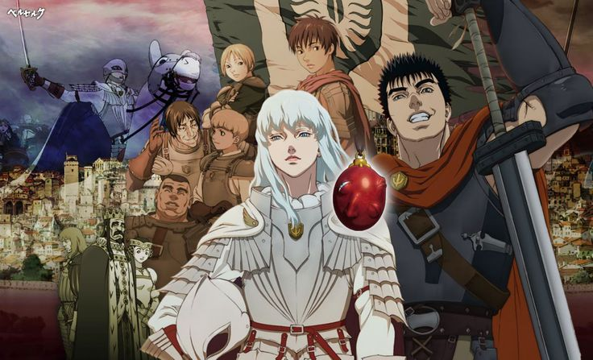

Berserk is a Japanese anime and manga series written and illustrated by Kentaro Miura. Set in a medieval Europe-inspired dark fantasy world, Guts, the Black Swordsman, is a feared warrior spoken of only in whispers. Bearer of a gigantic sword, an iron hand, and the scars of countless battles and tortures, his flesh is also indelibly marked with The Brand, an unholy symbol that draws the forces of darkness to him and dooms him as their sacrifice. But Guts won't take his fate lying down; he'll cut a crimson swath of carnage through the ranks of the damned - and anyone else foolish enough to oppose him.
